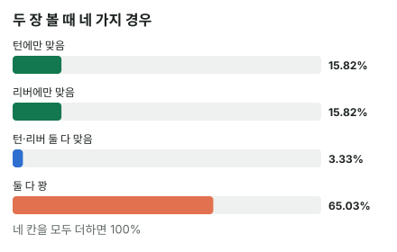

안녕하세요. I02에서 2·4 법칙을 배웠죠. 아웃츠에 2를 곱하면 한 장, 4를 곱하면 두 장 볼 때의 확률이라는 어림이요. 그리고 그 어림이 왜 조금씩 빗나가는지도 봤어요.
오늘은 어림 대신 정확한 확률을 직접 세는 법을 처음부터 열어 볼게요. 계산은 나눗셈과 곱셈뿐이에요. 대신 "무엇을 묻는 확률인지"를 정확히 나누는 게 오늘의 핵심이에요. 제목의 세 질문, 턴에 맞을 확률·리버에 맞을 확률·둘 다 맞을 확률은 계산 방법이 서로 달라요.
이 글에서 배울 것
- 확률의 출발점 아웃츠 ÷ 남은 카드, 그리고 "리버에 맞을 확률"이 46장으로도, 47장으로도 계산되는 이유
- 두 장을 볼 때 생기는 네 가지 경우(턴만·리버만·둘 다·둘 다 꽝)와, "한 장이라도"를 왜 "둘 다 꽝"을 빼서 구하는지
- "두 장 다 맞아야" 하는 뒷문 드로우가 왜 그렇게 작은지, 곱셈에서 숫자가 왜 하나씩 줄어드는지
1단계. 남은 카드 수부터
런아웃이란
런아웃 = 턴과 리버에 나올 카드들이에요. "보드가 어떻게 깔리느냐"를 말할 때 써요.
확률은 늘 아웃츠 ÷ 남은 카드로 시작해요. 아웃츠는 나오면 우리 핸드가 완성되는 카드, 남은 카드는 아직 우리가 못 본 카드예요.
47장과 46장
덱은 52장이에요. 여기서 우리가 눈으로 본 카드만 빼요.
- 플랍에서 우리가 아는 카드: 우리 2장 + 보드 3장 → 남은 카드 47장
- 턴에서: 우리 2장 + 보드 4장 → 남은 카드 46장
"상대 카드 2장도 덱에 없잖아요?" 하실 수 있어요. 맞아요. 그런데 무슨 카드인지 모르니 아직 못 본 카드로 똑같이 세요. 상대 손에 있을 수도, 덱에 있을 수도 있는 카드라서, 우리 입장에서는 47장 모두 나올 가능성이 같아요.
주머니에서 공 뽑기
비유하면 주머니에서 공 뽑기예요. 주머니에 공이 47개, 그중 원하는 색이 몇 개냐가 확률이죠.
그리고 중요한 것 하나. 한 번 뽑으면 공이 하나 줄어요. 턴 카드가 나오면 주머니는 46개가 돼요. 이게 뒤에서 곱셈을 할 때 숫자가 하나씩 줄어드는 이유예요.
2단계. 한 장만 볼 때 — 플러시 드로우(아웃츠 9장)
같은 무늬 4장(우리 2장 + 보드 2장)을 가진 플러시 드로우로 볼게요. 그 무늬는 13장 중 4장이 보이니 아웃츠는 9장이에요.
플랍에서 턴 한 장에 맞을 확률 = 9 ÷ 47 = 약 19.15% 턴에서 리버 한 장에 맞을 확률 = 9 ÷ 46 = 약 19.57%
남은 카드가 한 장 줄어서 리버 쪽이 아주 조금 높아요. 주머니에서 꽝 공 하나가 빠졌으니까요.
"리버에 맞을 확률"은 언제 묻느냐에 따라 달라요
그런데 플랍에서 "리버에 맞을 확률"을 물으면 답이 또 달라요. 턴이 뭐가 나올지 아직 모르니까요.
| 언제 묻나 | 아는 것 | 리버에 그 무늬가 올 확률 |
|---|---|---|
| 턴을 본 뒤 (턴은 꽝이었음) | 46장 중 9장 | 9 ÷ 46 = 약 19.57% |
| 플랍에서 앞으로를 물음 | 47장 중 9장 | 9 ÷ 47 = 약 19.15% |
플랍에서 보면 리버도 아직 못 본 한 장이에요. 턴과 처지가 똑같으니 약 19.15%예요. 턴을 보고 나서는 "턴이 꽝이었다"는 정보가 생겨서 주머니가 46장, 그중 9장으로 바뀌고요.
이게 무슨 뜻이냐면, 확률은 카드만의 성질이 아니라 "지금 무엇을 알고 있느냐"에 따라 달라진다는 거예요. 같은 리버 카드라도 묻는 시점이 다르면 답이 달라요.
3단계. 두 장 볼 때 — 네 가지 경우
곱하기 규칙 하나
두 장을 보려면 규칙 하나가 필요해요. 차례로 일어나는 두 일이 둘 다 일어날 확률은 곱해요. 단, 두 번째 확률은 첫 번째 일이 일어난 뒤의 주머니로 구해요.
네 칸으로 나누기
플랍에서 턴·리버를 다 본다면, 9장 플러시 드로우의 결과는 딱 네 가지예요.
| 경우 | 계산 | 확률 |
|---|---|---|
| 턴만 맞음 | (9 ÷ 47) × (38 ÷ 46) | 약 15.82% |
| 리버만 맞음 | (38 ÷ 47) × (9 ÷ 46) | 약 15.82% |
| 둘 다 맞음 | (9 ÷ 47) × (8 ÷ 46) | 약 3.33% |
| 둘 다 꽝 | (38 ÷ 47) × (37 ÷ 46) | 약 65.03% |

숫자를 하나씩 볼게요. 턴에 안 맞는 카드는 47 − 9 = 38장이에요. 턴이 맞았으면 리버 주머니에는 그 무늬가 8장, 꽝이 38장 남아요. 턴이 꽝이었으면 그 무늬가 9장, 꽝이 37장 남고요. 첫 장이 무엇이었느냐에 따라 두 번째 주머니가 달라지는 게 핵심이에요.
"한 장이라도"는 반대쪽을 빼서
"리버까지 한 장이라도 맞을 확률"은 위 네 칸 중 위의 세 칸을 합친 거예요. 하지만 세 칸을 하나씩 구하는 것보다, 남은 한 칸(둘 다 꽝)을 전체에서 빼는 게 훨씬 빨라요.
한 장이라도 맞을 확률 = 1 − (38 ÷ 47) × (37 ÷ 46) = 약 34.97%
4 법칙과의 차이는 I02에서 본 그대로
4 법칙으로는 9 × 4 = 36, 즉 36%예요. 정확한 값 약 34.97%와 조금 달라요. I02에서 봤듯이 4 법칙에는 오차가 두 개 섞여 있어요. 한 장의 몫을 실제(1 ÷ 47)보다 작게 친 오차와, 위 표의 "둘 다 맞음"을 두 번 센 오차예요. 9장에서는 두 번째 오차가 조금 더 커서 4 법칙이 살짝 크게 나와요. 아래 '왜 그럴까'에서 이 "두 번 센 칸"을 숫자로 다시 확인해요.
4단계. 두 장 다 맞아야 할 때 — 뒷문(러너러너)
뒷문 드로우란
플랍에 같은 무늬가 우리 것 두 장 + 보드 한 장뿐이라면, 플러시가 되려면 턴과 리버가 둘 다 그 무늬여야 해요. 이걸 뒷문 드로우(러너러너, 두 장이 연달아 와야 하는 드로우)라고 해요.
그 무늬는 13장 중 3장이 보이니 남은 건 10장이에요.
턴에 그 무늬 = 10 ÷ 47 = 약 21.28% 턴이 맞은 뒤 리버도 그 무늬 = 9 ÷ 46 = 약 19.57% 둘 다 = 0.2128 × 0.1957 = 약 4.16%
곱하기 규칙 그대로예요. 턴에 그 무늬가 한 장 나오면 남은 그 무늬는 9장, 주머니는 46장으로 줄어요.
"한 장이라도"와 "둘 다"는 완전히 다른 질문
| 묻는 것 | 계산 | 확률 |
|---|---|---|
| 한 장이라도 (플러시 드로우, 9장) | 1 − 둘 다 꽝 | 약 34.97% |
| 둘 다 (뒷문 플러시, 10장 → 9장) | 턴 × 리버 | 약 4.16% |
기다리는 카드 수는 오히려 뒷문이 한 장 더 많은데, 확률은 여덟 배 넘게 작아요. "한 장이라도"는 두 번의 기회 중 하나만 성공하면 되고, "둘 다"는 두 번 모두 성공해야 하니까요.
그래서 뒷문 드로우는 보너스예요. 다른 이유로 이미 콜할 만할 때 조금 얹어 주는 가치지, 그것만 믿고 콜하면 안 돼요.
왜 그럴까: "한 장이라도"는 더하기, "둘 다"는 곱하기, 그 사이에 겹침이 있어요
계산은 다 봤어요. 이제 왜 질문마다 계산이 다른지 한 겹 더 들어가 볼게요.
더하면 겹치는 칸이 두 번 들어가요
"턴에 맞을 확률"은 네 칸 중 턴만 + 둘 다예요. 약 15.82% + 약 3.33%, 그래서 약 19.15%죠. "리버에 맞을 확률"(플랍에서 물을 때)은 리버만 + 둘 다, 똑같이 약 19.15%고요.
이 둘을 그냥 더하면 "둘 다" 칸이 두 번 들어가요. 그래서 한 번을 빼야 정확한 값이 돼요.
19.15 + 19.15 − 3.33 = 34.97, 즉 약 34.97%
3단계에서 "둘 다 꽝"을 빼서 구한 값과 똑같죠. 같은 답을 두 길로 찾은 거예요.
4 법칙의 줄다리기를 이 숫자로 보면
4 법칙은 19.15 대신 2 법칙의 18을 두 번 더한 셈이에요(9 × 2 = 18, 18 + 18 = 36). 정확한 값과 비교하면 두 오차가 반대로 당겨요.
- 한 장 몫을 19.15가 아니라 18로 깎았으니 → 두 번 합쳐 조금 작아지는 쪽
- 겹치는 "둘 다"(약 3.33%)를 빼지 않았으니 → 커지는 쪽
9장에서는 빼지 않은 겹침이 깎은 몫보다 조금 커서, 36이 34.97보다 조금 커요. 아웃츠가 적으면 겹침 칸이 아주 작아져서 반대가 되고요(아래 문제 1에서 확인해 보세요).
곱하면 작아지는 이유
반대로 "둘 다"는 곱하기예요. 1보다 작은 숫자 둘을 곱하면 둘 중 작은 쪽보다도 더 작아져요. 3단계 표의 "둘 다 맞음" 칸이라면, 약 19.15%의 일(턴에 맞음)이 일어나고 그 안에서 또 약 17.39%의 일(턴에 맞은 뒤 8 ÷ 46)이 일어나야 하니까요.
이게 무슨 뜻이냐면, "한 장이라도"는 기회가 두 번이라 커지는 질문이고, "둘 다"는 관문이 두 번이라 작아지는 질문이에요. 기다리는 카드가 비슷해도 확률이 정반대로 움직여요.
숫자가 하나씩 줄어드는 이유
곱셈에서 두 번째 확률의 분모가 47이 아니라 46인 것도 같은 원리예요. 턴 카드는 이미 주머니에서 나왔어요. 그리고 턴이 맞았다면 기다리던 카드도 한 장 줄었죠(9 → 8). 이미 나온 카드는 다시 나올 수 없다, 이 당연한 사실이 분자와 분모를 하나씩 줄여요.
자주 하는 실수
실수 1. "한 장이라도"를 그냥 더하기 "턴에 약 19.15%, 리버에 약 19.15%니까 두 장이면 19.15 + 19.15 = 38.3"처럼 더하는 실수예요. 이렇게 하면 3단계 표의 "둘 다 맞음"(약 3.33%) 칸이 두 번 들어가요. 정확한 값은 약 34.97%예요. 대신 "한 장이라도"가 나오면 1 − 둘 다 꽝으로 바로 가세요.
실수 2. 뒷문 드로우를 아웃츠에 그냥 더하기 "플러시 드로우 9장에 뒷문 스트레이트도 있으니 아웃츠가 더 많다"처럼 세는 경우예요. 뒷문은 두 장이 연달아 와야 해서, 오늘 뒷문 플러시는 약 4.16%였어요. 한 장으로 완성되는 아웃츠와 같은 무게로 세면 확률을 크게 부풀려요. 뒷문은 아웃츠가 아니라 작은 보너스로 따로 생각해요.
실수 3. 곱할 때 두 번째 주머니를 안 줄이기 뒷문 플러시를 (10 ÷ 47) × (10 ÷ 47)처럼 첫 장과 같은 숫자로 곱하는 실수예요. 턴에 그 무늬가 나왔으면 남은 그 무늬는 9장, 주머니는 46장이에요. 지금은 차이가 작아 보여도, 기다리는 카드가 적을수록 한 장 줄어드는 게 확률을 크게 바꿔요. 곱하기 전에 "첫 장이 나온 뒤 주머니에 뭐가 남았지?"를 꼭 다시 세요.
"에퀴티 계산기에 나오는 숫자랑 왜 조금 달라요?"
좋은 질문이에요. 오늘 확률은 "그 카드가 나올 확률"이에요. 에퀴티 계산기는 상대 카드까지 넣어서 실제로 이기는 경우를 세요.
상대가 우리 아웃츠를 손에 쥐고 있거나, 맞아도 지는 카드(더러운 아웃츠, I04에서 배워요)가 있으면 숫자가 달라져요. 반대로 아웃츠가 안 와도 우리가 이기는 경우(상대가 더 약한 핸드)도 계산기는 세 줘요.
선생님의 한마디
- 계산 전에 몇 장을 공짜로 보는지부터: 베팅이 남았으면 한 장, 올인이면 두 장
- 질문을 말로 먼저 정하기: "한 장이라도"인가, "둘 다"인가
- 턴이 깔린 뒤에는 분모를 46으로 바꿔서 다시 세기
연습 문제
홀덤학습 에퀴티 계산기에 실제 핸드와 상대 핸드 하나, 보드를 넣어 오늘 확률과 비교해 보세요(조금 달라도 위 질문 절의 이유 때문이에요).
문제 1. 플랍에서 거트샷(가운데 한 장만 오면 스트레이트, 아웃츠 4장)이에요. 상대가 플랍에서 올인해서 턴·리버를 다 본다면, 리버까지 한 장이라도 맞을 확률은? 4 법칙과 비교하면 어느 쪽이 클까요?
정답 보기
1 − (43 ÷ 47) × (42 ÷ 46) = 약 16.47%. 4 법칙은 4 × 4 = 16, 즉 16%라 이번엔 4 법칙이 살짝 작아요. 아웃츠가 적으면 "둘 다 맞음" 칸이 아주 작아서, 두 번 센 오차보다 한 장 몫을 작게 친 오차가 더 커요(I02의 줄다리기).
문제 2. Hero는 9♠9♥, 플랍은 A♣ K♦ 4♠예요. 상대가 A♦K♠로 올인했고 Hero가 콜해서 턴·리버를 다 봐요. 남은 9는 2장이에요(승패 말고 카드가 나올 확률만 물어요). ① 리버까지 9가 한 장이라도 나올 확률은? ② 9가 두 장 다 나와 포카드가 될 확률은?
정답 보기
① 1 − (45 ÷ 47) × (44 ÷ 46) = 약 8.42%. ② (2 ÷ 47) × (1 ÷ 46) = 약 0.09%. 턴에 9가 나오면 남은 9는 1장, 주머니는 46장이에요. 같은 2장을 기다려도 "한 장이라도"와 "둘 다"는 이렇게 달라요. (여기서는 카드가 나올 확률만 물었어요. 실제 승패는 보드가 A·K로 페어가 되는지 같은 것도 영향을 줘요.)
핵심 정리
- 확률의 출발점은 아웃츠 ÷ 아직 못 본 카드. 같은 리버라도 언제 묻느냐(턴을 봤나)에 따라 46장·47장으로 달라져요
- 두 장을 보면 경우는 턴만·리버만·둘 다·둘 다 꽝 네 가지예요
- 한 장이라도 = 1 − 둘 다 꽝. 턴 확률과 리버 확률을 더하면 "둘 다"가 두 번 들어가요
- 둘 다 = 첫 장 × (줄어든 주머니의) 두 번째 장. 관문이 두 번이라 확률이 크게 작아져요
정리하며
오늘은 9장 플러시 드로우로 턴 한 장(약 19.15%), 두 장 중 한 장이라도(약 34.97%), 두 장 다 와야 하는 뒷문(약 4.16%)을 차례로 구했어요. 두 장을 네 칸으로 나눠 보니, "한 장이라도"는 겹치는 칸을 조심해야 하고 "둘 다"는 주머니를 줄여 가며 곱해야 한다는 게 보였죠.
실전에서는 계산보다 먼저 "지금 몇 장을 공짜로 보나"를 묻는 습관이 가장 중요해요.
다음 글 I31에서는 그 질문을 한 단계 더 넓혀요. 계산된 에퀴티를 왜 다 가져가지 못하는지, 남은 베팅과 포지션이 에퀴티를 어떻게 깎는지 다뤄요.
AI 작성 · 숫자는 계산 검증